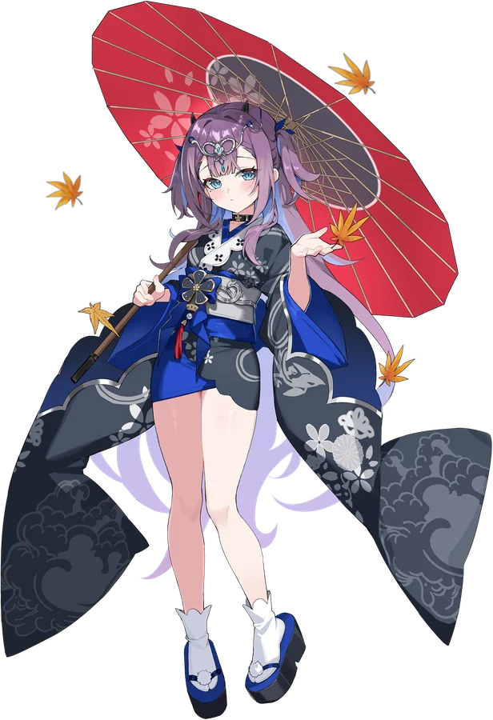
真梦梓 · 沼之蛟龙
龙崎分家的天川家一直是三神教中核心的大家族。作为家族掌管人的女儿，真梦梓比所有同龄的孩子都显得异常刻苦勤奋。然而再怎么高压的环境，也掩盖不了同龄孩子们一样正常的好奇心，真梦梓就是一个充满好奇心的孩子。
丢弃4格内所有敌方角色的1张随机手牌。使用主动技能时，如果目标的手牌数少于4张，额外造成2点伤害。
PVE自身获得1张撕咬，并使得5格内的所有友方角色获得1张卡牌，如果目标的手牌数量少于4张，则会额外获得1张卡牌。
受到伤害后，受到伤害-1，攻击力+1，持续至回合结束。
PVE使其他角色获得卡牌的时候，真梦梓获得1层觉醒（到达8层时，转变为【真龙形态】）。 当觉醒（到达8层时，转变为【真龙形态】）达到8层时，真梦梓获得真龙形态（攻击力+4，主动技能不再拥有范围限制）。 拥有真龙形态（攻击力+4，主动技能不再拥有范围限制）时，将手牌中及技能之后获得的撕咬转变为龙之咆哮。
基础资料
PVE 特性
- 达到1星时攻击力+1
- 初始星币+6
- 达到3星时攻击力+1、防御力+1、移动速度+1
默认
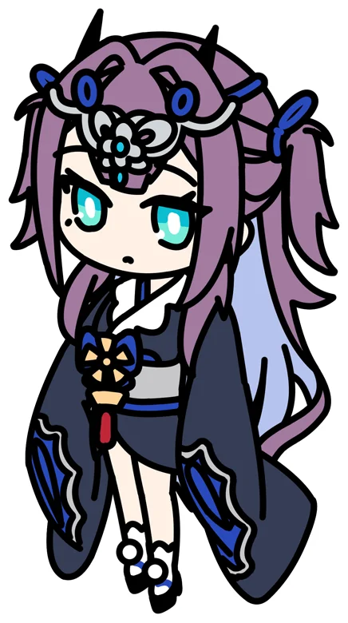
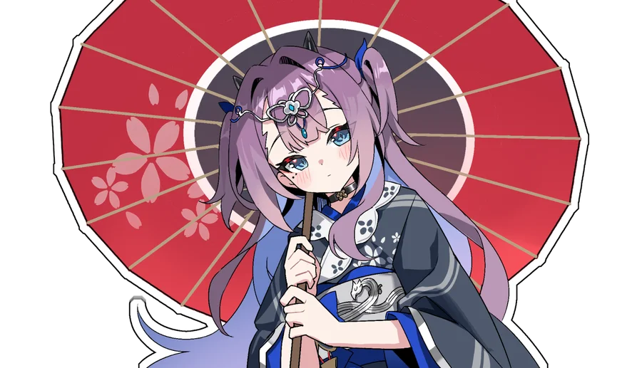
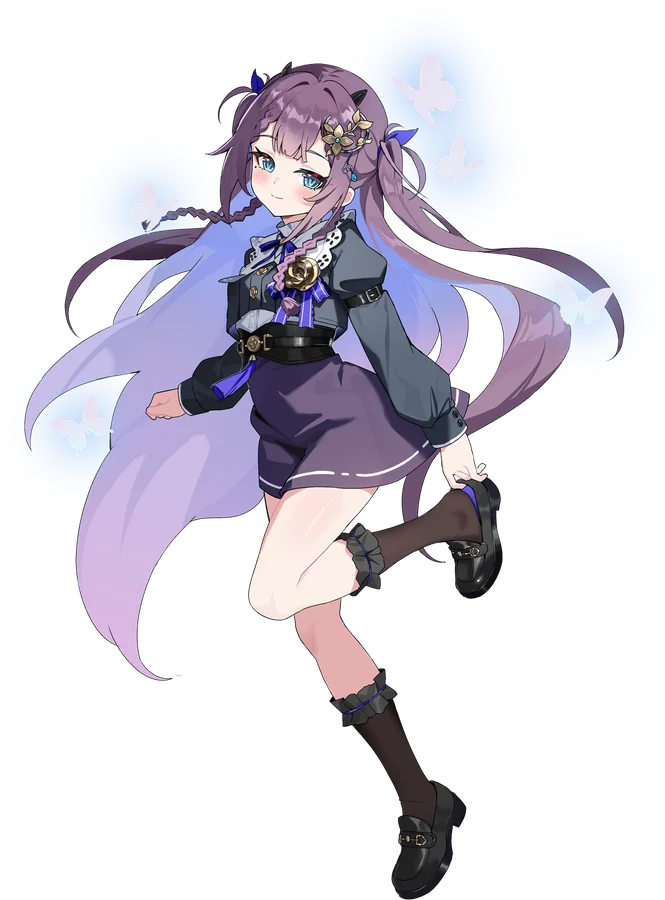
羁绊皮肤
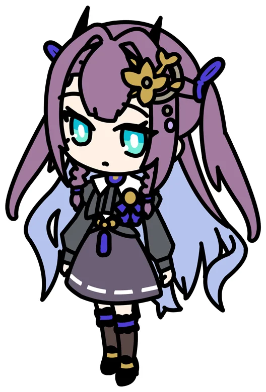
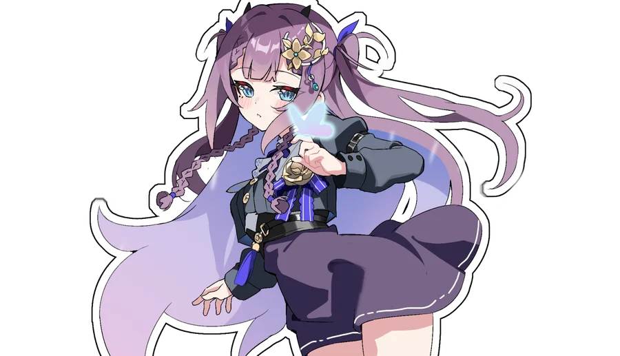
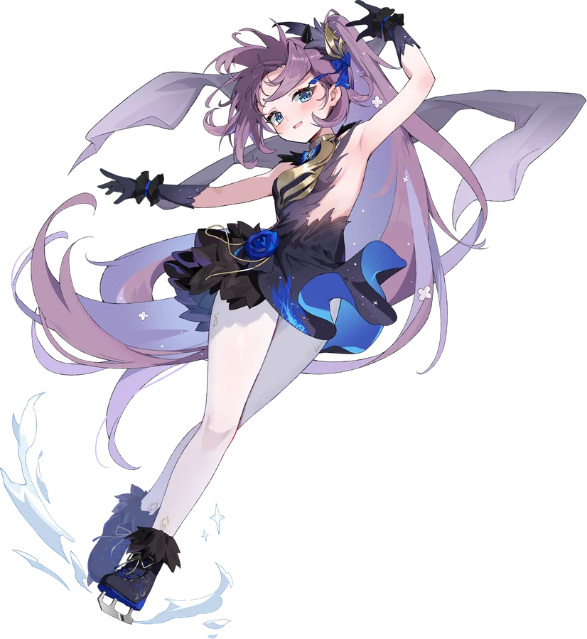
冰上舞者
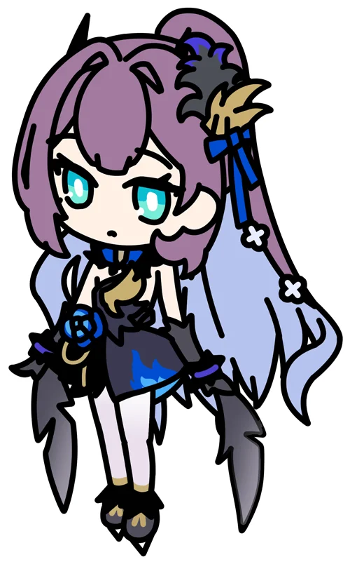
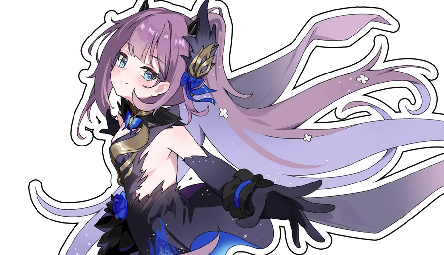
“你什么时候开始练的啊？这也太酷了！”照看完真梦梓的表演，一个劲地夸赞，高兴得像个孩子。 “御主有所不知，我几年前还很怕生，连在家族人面前露脸都显得很拘谨。”真梦梓拿起姑姑递来的毛巾。 “有一天姑姑偷偷带着我跑到附近的溜冰场，看到那些在冰面起舞的人，觉得他们很有魅力。” “当时我让她走，她非要再看看，我随口说了一句‘要不你也试试？’结果她就一直练到现在。”苍鲤无奈地耸了耸肩。 “虽然练了这么长时间，但还停留在两周跳呢。”显然真梦梓对自己的成长不是很满意。 “想什么呢，你只是当作业余运动来玩的，已经很好了！”苍鲤接过毛巾吐槽到。 “确实啊，我也觉得挺厉害的，再来几组？”照已经迫不及待地想看接下来的表演了。 “那继续滑两段吧，真的献丑了，御主。” 那天，照回忆起在电视上看到过的花样滑冰解说词，什么叫做：“容颜如玉，身姿如松，翩若惊鸿，婉若游龙。”
共 12 个表情，点击可放大。
官方 wiki 没有这角色的 /获取 页，头像、名片、卡牌、骰子的完整清单暂缺；下方「档案」里保留了画廊中的零散素材。
人物传记
现在是正儿八经的天川家家主，掌管家族及外部的一切管理权。
皮肤故事
冰上舞者
“你什么时候开始练的啊？这也太酷了！”照看完真梦梓的表演，一个劲地夸赞，高兴得像个孩子。 “御主有所不知，我几年前还很怕生，连在家族人面前露脸都显得很拘谨。”真梦梓拿起姑姑递来的毛巾。 “有一天姑姑偷偷带着我跑到附近的溜冰场，看到那些在冰面起舞的人，觉得他们很有魅力。” “当时我让她走，她非要再看看，我随口说了一句‘要不你也试试？’结果她就一直练到现在。”苍鲤无奈地耸了耸肩。 “虽然练了这么长时间，但还停留在两周跳呢。”显然真梦梓对自己的成长不是很满意。 “想什么呢，你只是当作业余运动来玩的，已经很好了！”苍鲤接过毛巾吐槽到。 “确实啊，我也觉得挺厉害的，再来几组？”照已经迫不及待地想看接下来的表演了。 “那继续滑两段吧，真的献丑了，御主。” 那天，照回忆起在电视上看到过的花样滑冰解说词，什么叫做：“容颜如玉，身姿如松，翩若惊鸿，婉若游龙。”
画廊其他素材
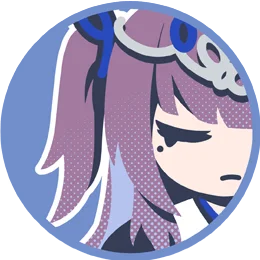

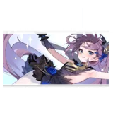
本地未收录该角色的语音台词。